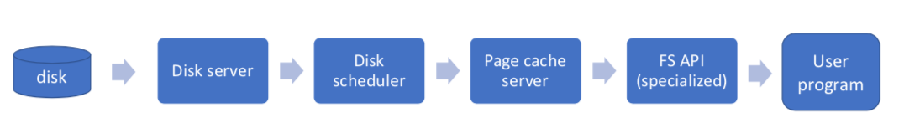
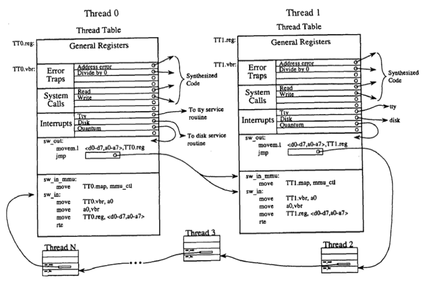

"Threads and Input/Output in the Synthesis Kernel"
Problem
Design an OS for a parallel and distributed computational environment and achieve the following three goals:
- High performance
- Self-tuning capability to dynamic load and configuration changes
- A simple, uniform and intuitive model of computation with a high-level interface
System Designs
Dataflow: Synthesis Model of Computation
- The threads of execution form a directed graph, in which the nodes are threads and the arcs are data flow channels
- Observation: Data follows a pipeline connects many OS-managed devices/resources (e.g.,
capture | xform | filter | detect &)

-
Above shows a dataflow example from Synthesis: file system server. It differs from a traditional design:
- Boxes are threads/servers
- Boxes are connected directly with
jmpinstructions to implement scheduling - Arrows (and boxes) are specialized dynamically to the application
Fast context switch: procedure chaining

-
Picture above shows that the ready-to-run threads are chained in an executable circular queue. A
jmpinstruction in each context-switch-out procedure of the preceding thread points to the context-switch-in procedure of the follow thread. -
"Executable data structures": embed code in data structures to avoid data structure traversals and to specialize code for each object (e.g., put context switch code inside of thread control block)
-
Context switch steps: Timer interrup vectored directly to current thread's
sw_out;sw_outcalls (directly) next thread'ssw_inorsw_in_mmu:- interrupt vectored to
sw_out sw_outsaves registerssw_outjumps to nextsw_in_mmusw_in_mmuupdates MMUsw_in_mmuupdates CPU interrupt vector basesw_in_mmurestores CPU registers (including putting user-PC into the user-PC register)sw_in_mmudoes return from exception (replacing PC with user-PC and changing mode back to user mode)
- interrupt vectored to
Mechanism to reduce syncrhonization overhead
Lots of techniques used to reduce synchronization overhead
-
Code Isolation: reduce false sharing (i.e., eliminate false sharing within a single C struct) (e.g., thread table entries (TTEs) are not shared. Similar to privatization)
-
Procedure Chaining: use continuations (implemented by changing the return address on the stack) to allow certain services to complete atomically (e.g., defer signal to end of interrupt handling)
-
Optimistic synchronization: it is easier to break the rule and ask forgiveness than get permission. Try the operation, but before commit, check to see if no one else interfered.
-
Lock-free queues that use the compare-and-swap instruction 1. This is not wait-free (some operations do not have bounded waiting time), it is obstruction-free (a thread, executed in isolation for a bounded number of operations will complete).
Remarks
- Even I cannot fully understand every bit details of the paper, I think it is the best written paper I have read so far in the semester (the flow is great).
- Many details in the paper are omit: scheduling, interrupt handling, details of lock-free queues (SP-SC, MP-MC,etc)
-
Lots of cool techniques that are worth investigation in its own rights and they are "field openers"
- Code synthesis (JIT compiler, super-optimizers)
- Code isolation (Privatization)
- Procedure chaining (Continuations (lambda, events))
- Optimistic synchronization (lock-free data structures)
- Synthesis I/O (Dataflow: Scout, Click Router, SEDA, StageServer, IXP, PTask, etc)
-
See OSTEP::locks for details on test-and-set and compare-and-swap instruction and their usage in lock implementations. ↩